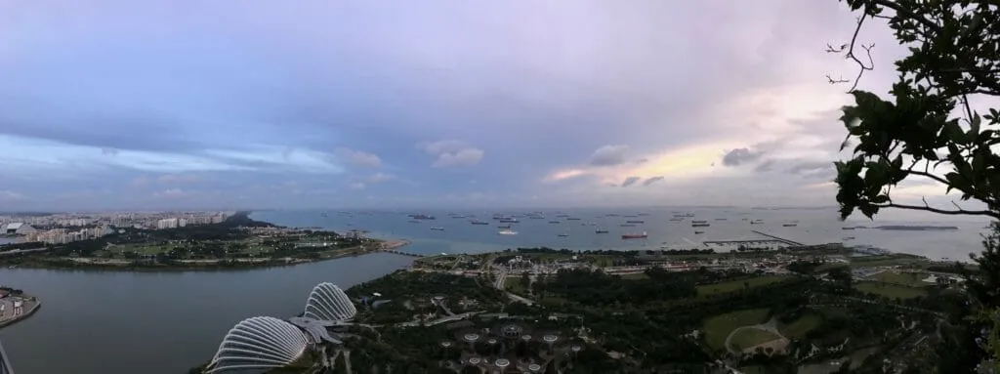
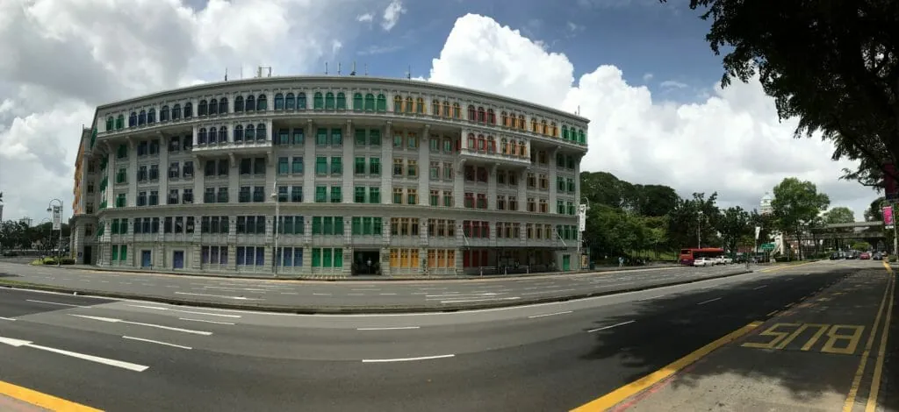

Jaaa daar zijn we weer! Enigszins stadsmoe, maar voldaan hebben we weer een aantal verhaaltjes op een rijtje gezet. Zoals gezegd drie hoofdsteden op een rij, maar we beginnen even waar we gebleven waren. Melaka, een dorp op 150 km onder Kuala Lumpur!
Melakka
In Malakka hebben we voornamelijk rustig aan gedaan, de plaats zelf heeft de hoofdprijs meest aantal musea per vierkante meter gewonnen — 37 (!!!) om precies te zijn, wat exorbitant is voor een plaats vergelijkbaar met Ede.
Geen van de 37 musea is voor ons interessant genoeg om te bezoeken dus gaan we de 4 dagen dat we hier zijn onze eigen weg op onze gehuurde (elektrische) beachcruisers.
Na 1 nacht in een massa-hotel te verblijven, verplaatsen we naar het leukste hostel tot nu toe. De eigenaar van dit hostel heeft op de binnenplaats achter zijn eetcafeetje een slaapkamer gebouwd met 5 bedden, en aangrenzend 2 douches. Alles is super schoon en heel leuk ingericht. Het kleinschalige en de eigenaar en zijn vrouw charmeren ons. En dit is achteraf gezien de reden waarom we 4 dagen in Melakka gebleven zijn.
We hadden eerst het idee om naar Singapore te gaan, om daar het Chinees Nieuwjaar te vieren. Echter duurde dat nog zo’n 10 dagen en dat is voor een (dure) stad als Singapore nogal lang. We besluiten eerst nog een tussenstop te maken in KL, oftewel Kuala Lumpur, waar we de vanaf Melakka per bus heen zijn gereden.
In KL heeft Michel een — zo blijkt — leuk hotel gevonden, midden in China Town.
De locatie is stategisch gezien een super plek door zijn centrale ligging en alle mogelijke transportmiddelen die hier binnen handbereik te vinden zijn.
Wat deden we eigenlijk allemaal in KL, een stad die we in 2015 ook al bezochten?
- We hebben een poging gedaan om wat betaalbare kleding te kopen. Helaas zijn de opties vaak als volgt: óf een enorm duur Frans modemerk óf een leuk en goedkoop B-merk wat hele rare pasvormen heeft waardoor het nooit goed zit.
- Ook hebben we drie volle middagen in een héle fijne koffietent gezeten met onze MacBooks. Ze hadden hier goeie koffie en — iets wat bijna uitzonderlijk is voor Azië — stabiel en redelijk snel internet. Ik Tim kwam weer tot rust na het veilig stellen van onze foto's in de Cloud, daar we hier zo'n 2 maanden op achterliepen.
- We hebben de nationale moskee van Maleisië bezocht. Ze hebben hier erg beperkte bezoekuren voor toeristen, en waar we initieel een uur bezoektijd hadden liepen we pas na 3,5 uur de moskee uit. Nadat we 5 minuten binnen waren raakte we in gesprek met Al Pozer, een vrijwillige gids in de moskee. We hebben het over de verschillende geloven maar zeker ook de gelijkenissen van het geloof gehad. Ook kregen we een uitleg bij de rituelen van een gebed, en discussieerden we over de meest uiteenlopende zaken.
- Op een middag zitten we bij een westers georiënteerd eetcafeetje te eten en na verloop van tijd komen er steeds meer mensen bij de tafel naast ons staan. Ze begroeten de tafel naast ons en vragen om met hun op de foto te gaan. Nieuwsgierig dat we zijn vragen we het na bij de assistent (of was het zijn bodyguard?) en die vertelt ons dat het de voormalige minister president (1981-2003) Mahathir Mohamad met zijn vrouw is. Dat verklaart een hoop.
- Op de een na laatste dag in KL besluiten we met de trein naar Port Klang te reizen om aldaar de ferry te pakken naar Pulau Ketam. Dit Chinese vissersdorpje is compleet op palen gebouwd en heeft geen wegen of gemotoriseerd vervoer. Het hoofd vervoermiddel is de fiets — of een elektrische variant daarvan. Het vissersdorpje is gericht op de vangst van krab. Pulau Ketam betekend dan ook niets meer dan Krab eiland.We struinen wat door de straatjes, wagen ons leven op verrote steigers en eten een bordje rijst. De dag is prachtig en lichtelijk sunburned gaan we weer terug naar KL.
Singapore werd Kuala Lumpur maar Kuala Lumpur werd toch weer Singapore…
We pakken de bus naar Singapore en zoals bij elke grensovergang over land, ga je lopend de grens over om vervolgens achter de grens weer in de bus te stappen. Met een nieuwe verse stempel in ons paspoort rijden we Singapore binnen, opweg naar Little India, waar we ons hebben ingeschreven voor een hostel. Het contrast met Maleisië is groot, dat valt meteen op en alles wat we hebben gelezen wordt meteen bevestigd.
Singapore is HET land van de regeltjes en strenge wetten. De straten zijn brandschoon en elke straathoek gaat gepaard met verbodsborden. Dit resulteert wel dat we in het veiligste en schoonste land ter wereld zijn.
We komen tijdens ons bezoek aan deze stad meerdere (voor ons) iets extreme voorbeelden tegen.
- Kauwgom is bij wet verboden; Boete: S$ 1000,- (€600,-)
- Steek niet over anders dan bij stoplichten of zebrapad; Boete: S$ 500,- (€300,-)
- Spuugen op straat zoals heel China doet? Boete: S$ 100,- (€60,-)
- Slokje water in de metro nemen: Boete: S$ 500,- (€300,-)
- Niet doorspoelen van een openbaar toilet Boete: S$ 500,- (€300,-)
- Iets op de grond gooien: Boete: S$ 1000,- (€600,-)
- Roken; niet in openbaren gebouwen, op straat alleen bij de aangewezen asbakken anders boete: S$ 500,- (€300,-)
Wat deden we eigenlijk allemaal in deze grote stad?
- Op het eerste gezicht lijkt Singapore een shoppingmall stad en als het de eerste dag met bakken uit de lucht komt, moeten wij ons met tegenzin overgeven aan al die malls op Orchard Road. Het is allemaal ver boven ons budget (de Louis Vuittons en Gucci’s vliegen om je oren). We slenteren een middag met tegenzin door de marmeren shopping paleizen in de hoop weer de volgende dag iets beter is.
- We hebben in Cambodja op het eiland Koh Rong een Brits stel ontmoet, en ze blijken op dat moment ook in Singapore te zijn dus we doen een ‘meet up’ en lopen samen door de Gardens by the Bay (een tuin om de natuur met de stad te laten samenkomen).
- MacRitchie Park; We zijn stad-moe aan het raken en zoeken dan ook alternatief vertier. Met de Metro (zonder chauffeur) verplaatsen we ons iets up-north en hier in het park met water reservoirs liggen verschillende hike routes, met als klap op de vuurpijl een TreeTop Walk. Deze loopbrug is ter hoogte van de toppen van de bomen, hierdoor heb je zicht op totaal andere flora & fauna en de Macaque apen vliegen ons om de oren! De trip die we lopen is uiteindelijk zo’n 20km en was echt een prettige afwisseling op de stad!
- Marina Bay Sands; Een landmark van de stad is een hotel wat bestaat uit 3 naast elkaar staande torens met een ‘boot’ op het dak wat de gebouwen met elkaar verbind. Deze boot biedt plaats voor meerdere bars, restaurants en een infinity pool. Dit is een zwembad van glas waarbij het net lijkt alsof je in het oneindige kan zwemmen.We besluiten hier een drankje te doen. Het uitzicht was geweldig, de borrel ook, alleen was het de prijs van ons complete dagbudget 🙂


Chinees Nieuwjaar
We zijn naar Singapore gekomen om het Chinese Nieuwjaar te vieren, We hebben in Melakka 2 Duitse studenten ontmoet die een exchange semester in Singapore hebben en met hun hebben we afgesproken in China Town. We eten roasted duck in de menigte en proberen een gevoel te krijgen van wat de viering inhoudt voor de Chinezen. Om 00:00 zitten we klaar op de tribune voor het vuurwerk, maar zo strikt zijn ze dus niet. Het komt allemaal niet zo nauw. Rond 00:04 besluit men een aankondiging te doen en begint de vuurwerkshow. Geen countdown dus, niks van dat alles. Direct na het vuurwerk (4 minuten?) staat iedereen meteen op en gaat richting huis… we kijken elkaar wat beduusd aan en besluiten ook maar te gaan. GONG XI FA CAI (Happy Lunar New Year)!

Op de eerste dag van het Chinese Nieuwjaar vliegen we naar Jakarta. Ik hoor je denken: “Alweer een stad?!” Ja en niet een kleintje! 10 miljoen inwoners wonen in deze immense stad en het is hier doordeweeks een krioelend mierennest op de weg. Gelukkig komen we zaterdagavond aan dus onze eerste dag is op een wat rustigere zondag.
We zijn op onze eerste (echte) dag meteen met frisse moed op pad gegaan. Ons hotel ligt goed centraal en lopen dan ook naar de — wat wij dan nog denken — metro.
Aangekomen bij het station kopen we een kaartje aan de balie, waarna we even moeten rennen want er komt al toeterend een trein aangereden. De metro is hier dus een stoptrein, die door de stad en de buitenwijken rijdt. We doen een sprintje maar de deuren gaan net dicht. De conducteur lacht vriendelijk en de deuren gaan voor ons weer open. We stappen in, maar blijken in de vrouwencoupé te zijn ingestapt. We manoeuvreren ons naar voren naar het mannengedeelte.
Deze zit alleen zo tjokvol dat we ons maar op het wiebelende plateautje tussen de twee treinstellen installeren. Meteen hebben we contact met een local die ons hartelijk welkom heet en graag een praatje met ons maakt. Bij het station waar wij er uit moeten wenst hij ons nog enorm veel plezier in zijn prachtige land, en maakt hij excuses voor de slechte mensen die we misschien tegen kunnen komen.
De trein blijkt iets te lang te zijn en we moeten dat ook een flinke meter naar beneden springen uit de trein om weer terug op het perron te komen. Als de 2 treinen om ons heen weggereden zijn lopen we in een chaotische menigte (over het spoor) naar de andere perrons. Op 1 perron hebben ze trappetjes staan zodat je de trein in kan lopen die aan weerszijde zijn deuren heeft openstaan, voor het geval dat je niet met deze lijn mee moet, maar nog een perron moet opschuiven.
Al wachtende op onze volgende trein, komt er een mannetje naar ons aangelopen en is meteen geïnteresseerd waar we heengaan. We leggen hem uit dat we op de blauwe lijn wachten en uitstappen op het eindstation Jakarta Kota. Hoe behulpzaam iedereen hier is, legt hij het gewoon nog een keer uit dat we voor Jakarta Kota de blauwe lijn moeten hebben en tot het einde moeten blijven zitten. “Maar volg mij maar, ik moet ook die trein hebben” De man is heel erg geïnteresseerd in ons, waar we heen gaan en waar we vandaan komen. En vertelt ons waar we heen moeten volgens hem in Indonesië. Inmiddels zijn we aangekomen op Jakarta Kota en op het moment dat we uit de trein stappen worden we benaderd door 2 jonge dames, of ze ons mogen interviewen, want ze studeren Engels en ze moeten foreigners interviewen. We stemmen hiermee in, en ze vragen ons te volgen. We beginnen al lopenden een kleine verdenking van scam te hebben, en zijn iets op ons hoede. Het interview is hartstikke leuk, en tijdens dit gesprek worden we al meerdere malen onderbroken voor een foto van ons. Na het interview staan er hele hordes Indonesiers om ons heen om met ons op de foto te mogen of ook een interview te doen met ons…
We staan weer op een heleboel selfie’s en groepsfoto’s en banen ons een weg door alle aandacht, na beide nog zo’n 5 interviews gaan we toch echt opzoek naar eten.
We brengen die dag ook een bezoek aan de Batavia haven en kijken onze ogen uit naar de schepen die hier liggen. Het terrein is ook vergeven van studenten die fotoshoots met elkaar hebben en na een rondje over de werf zelf een heleboel foto’s te hebben gemaakt hebben we het wel gezien en sluiten de dag af.
Tijd om eens goed na te denken waar we allemaal heen willen in Indonesië!
Wij zien niet wie er allemaal meelezen én we vinden het super leuk als je reageert op onze blogs... scroll even verder door dan kan je daar je reactie achterlaten!
Duurt het je soms te lang voordat we onze belevenissen weer met je delen?
Op Instagram delen we vrijwel dagelijks foto's met daarbij een kort onderschrift. Hiermee heb jij alvast een kleine preview.
Wederom weer een leuke blog 🙂
Ik kijk uit naar de volgende, ik lees ze allemaal!
Selina! Wat leuk dat ook JIJ meeleest! Nou we gaan dan maar weer wat avonturen tegemoet zodat we weer wat te schrijven hebben 🙂
mooi verhaal wederom! genietze
Dankjewel! Tot het volgende verhaal!
Alweer een kwartiertje meegeweest op reis met jullie…pure vitamientjes.Prachtig…
Haha… Ben blij dat we je vitamientjes kunnen geven! We vinden je reacties altijd zo leuk!
Heerlijk weer over en van jullie te lezen. We krijgen er geen genoeg van. Ook al hebben we veel via facetime gehoord met de beelden erbij is het nog leuker en we hebben het ook met eigen ogen gezien enige tijd geleden. Genieten dus, deze gaat over mij maar hij geldt ook voor jullie. Moesje.
Haha.. we genieten zeer zeker! En zijn zo blij dat we iedereen zijn support hebben. Dat maakt het allemaal zo fijn! Bijna naar Australië voor jullie! Liefs!
Steeds wanneer de nieuwsbrief in mijn mailbox binnen komt, is mijn eerste reactie: YES weer een bericht van michel en tim! Net weer lekker zitten lezen!
Blij dat het goed gaat met jullie! X
Haha, we vinden je reactie elke keer zo leuk ook, dus beide kanten veel plezier! Liefs!
Malakka: 37 musea per vierkante meter! Dat moeten wel heel kleine museaatjes zijn… Ik heb weer genoten, lieve Tim en Michel. Lieve groet, Liesel
Die zin was dubbel interpreteerbaar, Bedoelde dat de plaats 37 musea heeft, en hiermee de meeste per vierkante meter 🙂
Kus